Site Report
Abstract
I am Nishedh Karki, a student of Northampton University. This website is my submission for the College Assessment Assignment given By the Northampton University. The goal was to create a responsive website to show my portfolio and CV. There are 5 pages:
This is the final report of the website with all details of it's creation as well as my personal logs. The report shows not only the development of the website but also my personal growth as a developer. It includes different challenges and obstacles encountered during the development of the website.
Objectives
- To Test My HTML and CSS skills.
- To Create a functional and well-designed website.
- To get knowledge about fundamentals of building websites.
- To get knowledge about the webpages and how they work.
- To learn Git and make optimal use of it's function.
Module: CSY1018 WEB 1
My journey in the module 'WEB1' has been very exciting. In the beginning, I was not really sold by the career of web development as I was interested more in Software Engineering. This module, however, made me realize the beauty of web development and rethink my plan. "Just HTML and CSS is too less", I used to think but as the module progressed I realised how much I had yet to learn. Learning github was another great experience for me. I can now confidently say that i've grown a lot. I look forward to the next term.
Creating the Website
When I got the assignment, in May 12, I was very nervous and
doubtful in my abilities as a developer. But as I started building
the website I definitely beccame more confident in myself.
The first thing I was thinking about while creating the website was
the layout and theme. It was very difficult to come up with a good
design so I decided to just start the basic menu and go with
whatever came. Needless to say, I had an idea to create a sci-fi
themed website. Hence, I started to research and saw some sfi-fi
works like "star wars" and "rick and morty" to get a grasp of the
mood and colors for the website. Hence, I created some glowing neon
effects on everything with Blue colored theme. I used Box-Shadow
property on CSS to create the glowing border on the Nav bar and Menu
items. I planned out the layout but not the content at all. Later
that day i decided to use some red to complement the Cyan and
changed the text color to cyan. Also due to bright background the
"Glow" was getting undermined, so I decided to use Deep Blue for the
background gradient instead. The hover effect was also added to the
menu to make it brighter while hovered. Then an idea of creating the
big sections of the pages to float around as if they're in space
popped in my head. I worked on the animation using @keyframes. I
also decided to make change on the code design so that the
redundancy of repeating the Box-shadow property was removed. Instead
of giving box-shadow property to every elements(nav bar, home page
container etc), I created a new class glowBorder and glowShadow with
the properties. A new 'Curr' class was also added to the menu item
of the current page. The curr class was given a bouncing animation
using @keyframes, and background color was made bright.
Although the initial theme for the website was sci-fi, half way
through the development i Issued a major change to it by taking it
to a whole different direction which is the final design for the
website. The theme now is gray-scaled. The change was made because I
suddenly felt that I overdid with the design on the previous ones.
It was also very difficult to manage, due to fixed box-shadow size
the site looked hideous in mobile. Also, The "formal" contents like
CV didn't fit the sci-fi environment I had created for the website.
With the gird display everything fell on place. The code was very
manageable, easy to debug and also very clean. There was no problem
with the content. The website was mobile-friendly right away.
At the very end of the project I found out about the main tag to
enclose all my contents inside. It was definitely a surprise to
findout about it from freeCodeCamp when i was practising some more
web developing. I decided to go with grey-scaled as it is a modern
term. All the websites these days have dark mode. So I went with
something along that line.
Discord app was the website I was
inspired by. The layout is created using grid-display to make it
more adaptive towards responsive design.
I definitely learned a lot during this project aside from just html
and css but also about design. The following log will show the
journey of creating this page and my personal takes.
Logs:
-
May 12, 2021:
The basic webpage layout was created this day.
Created the Nav bar and menu items.
switched between different iterations of background colors and text colors.
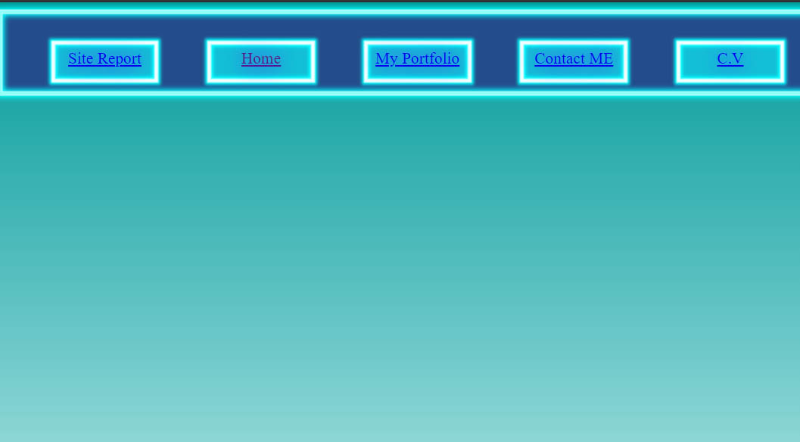 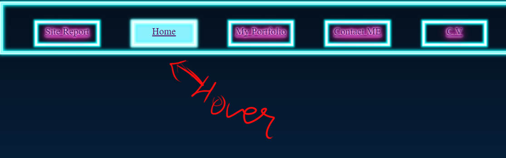 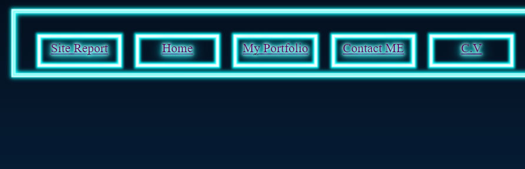
-
May 13, 2021:
Contents For Home Page and Contact page was Made on this Day.
Created a new class glowBorder and glowShadow with the properties.
Gave the menu item of current page an animation of bounce.
The background was replaced by an image with a planet and moon.
New animation "float" was created to make some contens feel like they're floating by moving their positions slowly and constantly.
The form also had Red Glowing effect on active inputs as shown in figure.
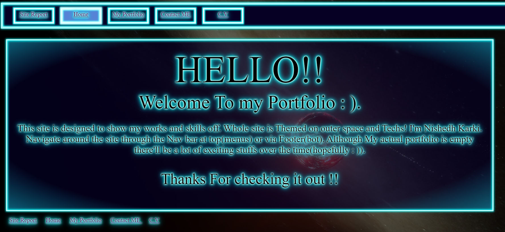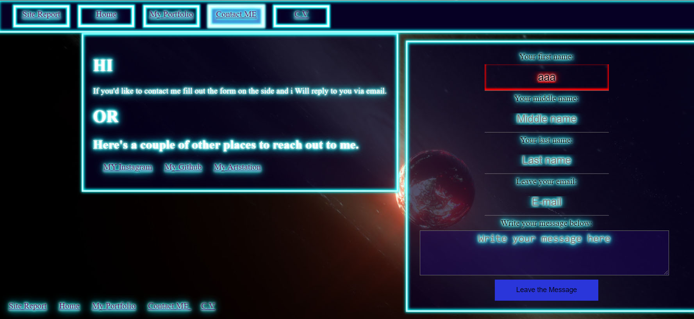 -
May 14, 2021:
Created Menu items into a list of hyperlinks.
Tried To create a Side bar for menu and Scrollable Div with 'Aside' Tag but failed.
Other small position and size changes on the contents of Contact webpage.
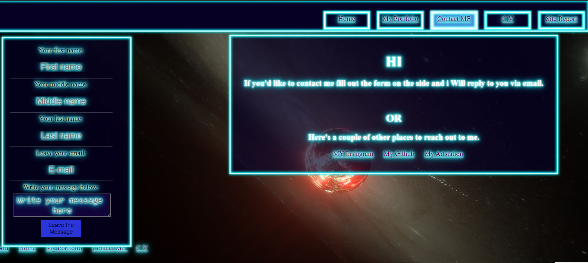 -
May 16, 2021:
Started on CV-- Did the basic layout and added a placeholder image to be replaced by my own photo later.
Started on Portfolio-- Added Some of my artwork for Images as placeholders for the actual web projects from upcoming terms.
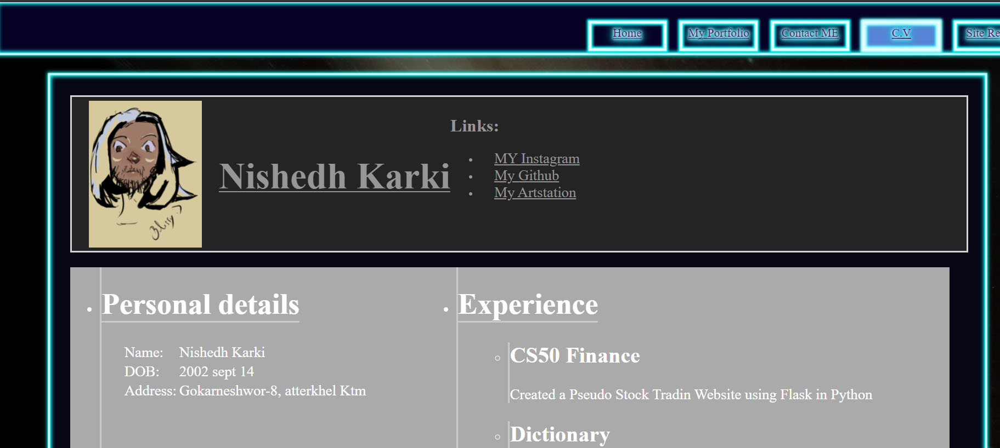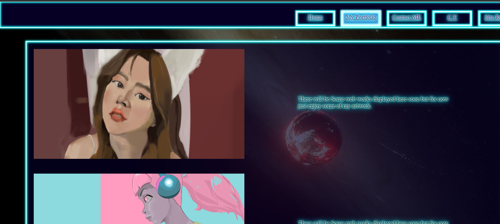 -
May 18, 2021
A HUGE DESIGN DECISION: Goodbye shiny borders and text.- I changed my website theme to 'grey-scaled' from the 'glowing sci-fi'-theme.
Display: grid in website layout was implemented for better resposiveness. The webpage is divided into three mail parts:- The Header
- Menu Bar/ Nav Bar
- Content Container
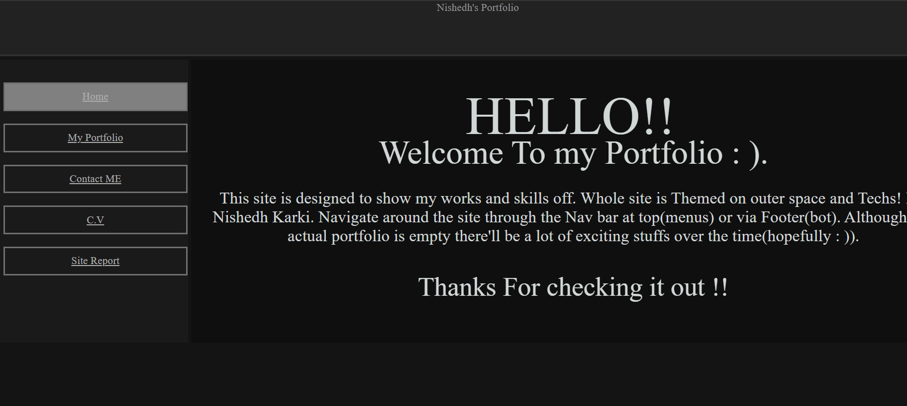 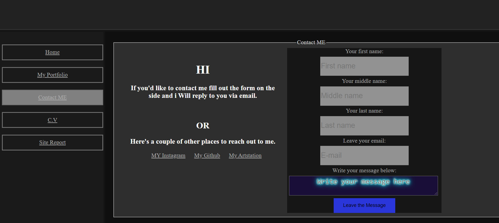 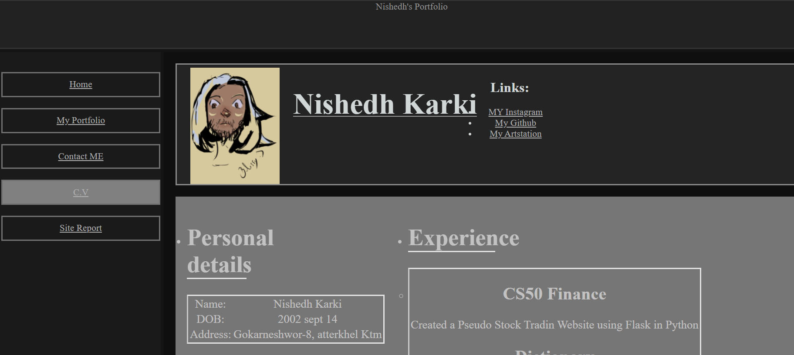 -
May 19, 2021
Branched out to work on hamburger menu. Created "hamburger" branch on github.
Started on the hamburger item in 'hamburger' branch.
Small Placeholder for hamburger was created. Tried to use the checkbox method to create functioning hamburger menu.
Used the Mailto: action in form attribute.
Added media querry for mobile view and started to change the layout.
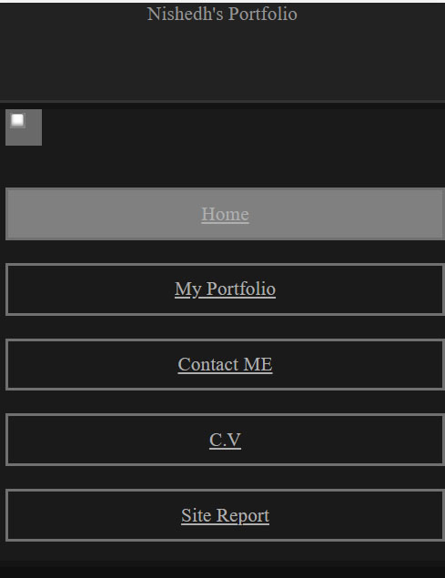 -
May 20, 2021
Added some contents inside the pages. No big changes this day.
Hosted the page on github to check cross-platforms easily. -
May 21, 2021
Created functional hamburger menu with checkbox method. Toggled between display:none and block to turn menu on and off.
-
May 22, 2021
Completed Hamburger menu altogether.
Merged "hamburger" and "main", Fixed the merge conflicts as well.
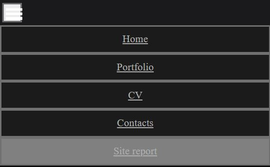 -
May 23, 2021
Set some of the texts' size with vw units instead of fixed pixel to make them more responsive. This fixed the overflow issues in my website.
At this point the website was basically completed.
The "main" div made Scrollable so the menu doesn't disappear with page scroll without using position properties. -
May 29, 2021
Discovered 'main' tag and used it correctly. Instead of using div with id main.
Validator images
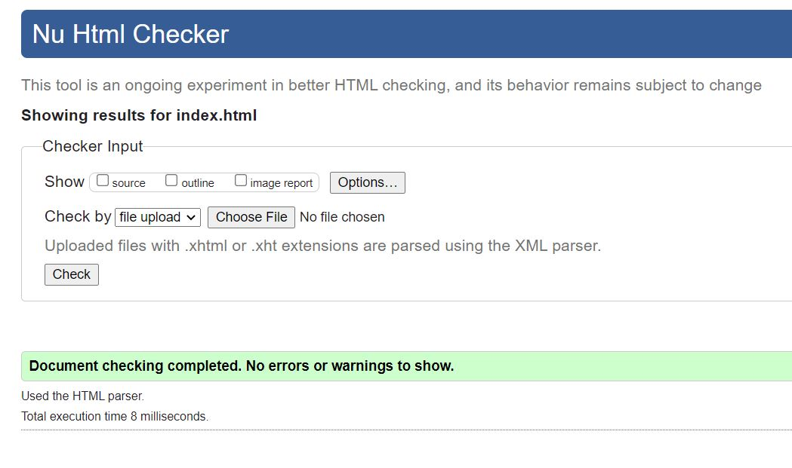 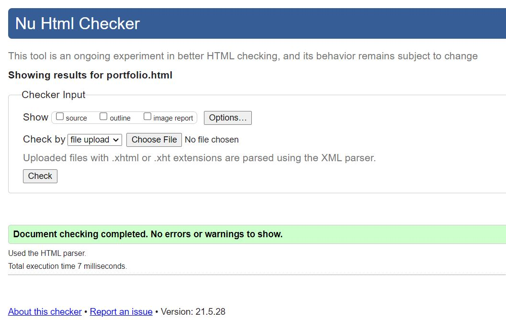 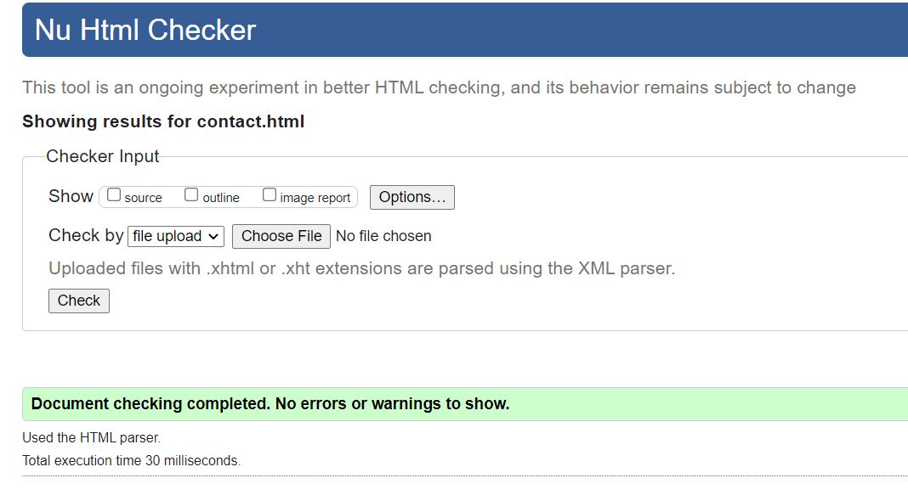 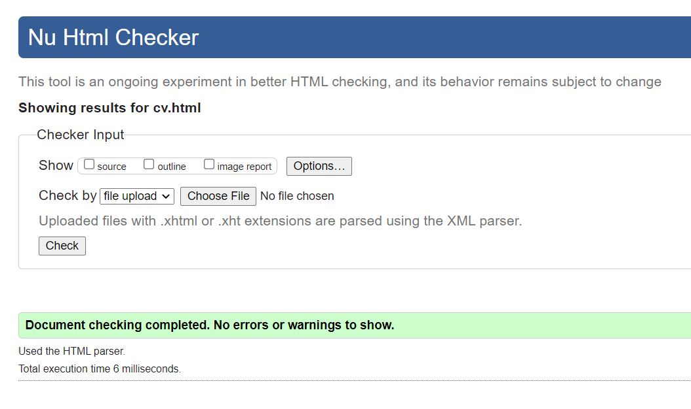 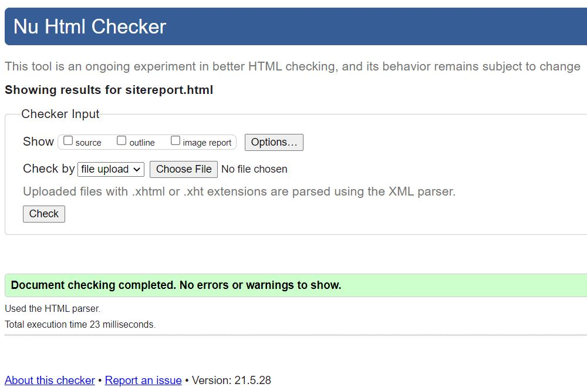 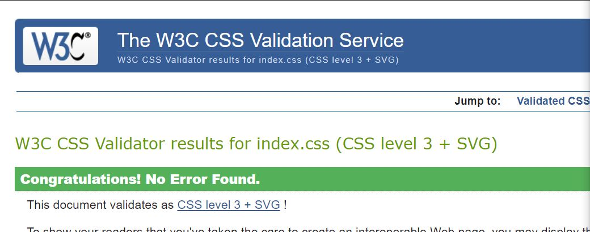References:
- https://www.youtube.com/watch?v=DZg6UfS5zYg, (2019). Pure CSS Hamburger Menu & Overlay - YouTube. [Online] Available at: https://www.youtube.com/watch?v=DZg6UfS5zYg [Accessed 19 May.2021].
-
https://www.freecodecamp.org/ learn/responsive-web-design/. Learn
Basic HTML and HTML5: Introduction to HTML5 Elements |
freeCodeCamp.org.
[online] Available at: https://www.freecodecamp.org/learn/ responsive-web-design.[Accessed: 29 May, 2021].